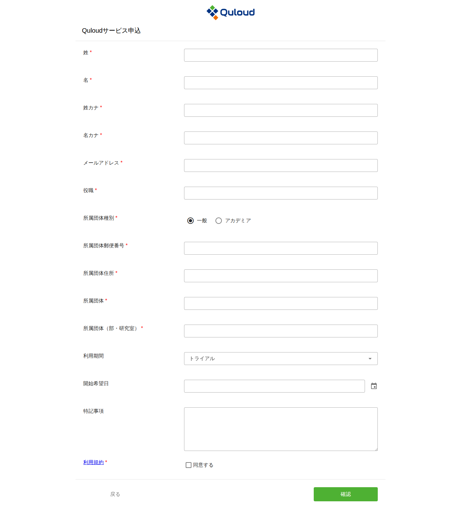
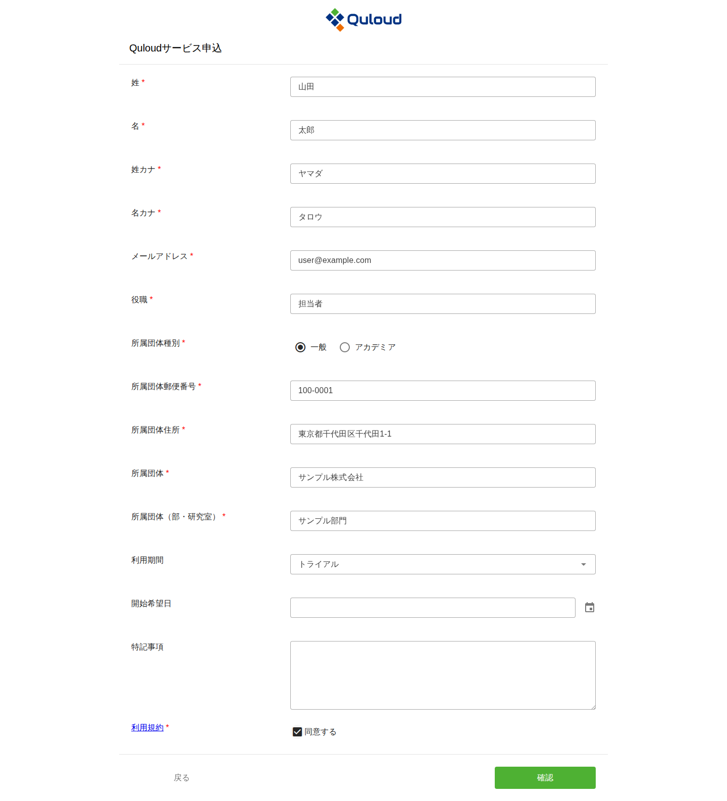
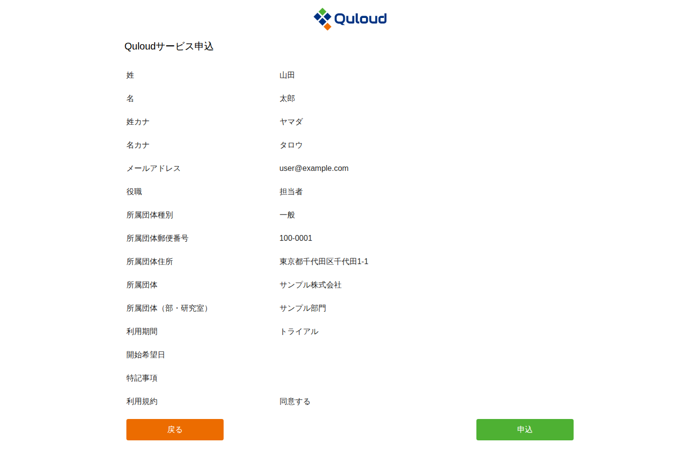
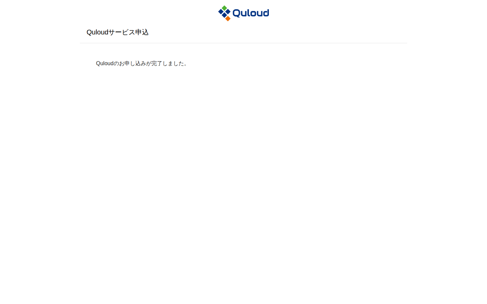

2. サインアップ
注釈
本章は Quloud Ver.7.0 を対象としています。記載内容の確認日は 2026 年 9 月 8 日です。
Quloud の利用を開始するには、まず利用申込を行います。以下の URL にアクセスしてください。
https://2g.quloud-platform.com/applicant
2.1. 利用申込
次の申込フォームが表示されます。

図 2.1 利用申込フォーム
項目名の右に赤い * が付いている項目は必須です。
「姓カナ」「名カナ」はカタカナまたは英字で入力します。
「所属団体種別」は「一般」と「アカデミア」から選びます。
「利用期間」は「12ヶ月」「6ヶ月」「3ヶ月」「トライアル」から選びます。初期値は 「トライアル」です。
「開始希望日」はカレンダーから選びます。
「利用規約」のリンクから利用規約をご確認のうえ、「同意する」にチェックを入れてください。

図 2.2 入力を終えた利用申込フォーム
2.2. 入力内容の確認と申込
「確認」ボタンを押すと、入力内容の確認画面に移ります。

図 2.3 入力内容の確認画面
内容を確認し、「申込」ボタンを押すと申込が完了します。修正する場合は「戻る」ボタンで 入力画面に戻ります。

図 2.4 申込の完了画面
注釈
すでに Quloud を利用しているテナントに参加する場合は、この申込ではなく、 そのテナントの管理ユーザーから招待を受けます。手順は 新規ユーザーの招待 の章を ご参照ください。